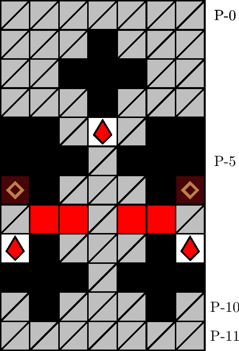

一般指針
エリア・倉庫

指針
倉庫は， P-8 行目のザクロが初期配置の状態で取得可能かどうかを計算し，可能ならば配置と塊に注意しつつ取得します．可能でないならば自然に潜行します．
解説
倉庫とは，図 3.2.9.1 のエリアを指します． 700 m型の 32 行目に確率で出現します． P-1 行目の壁の配列によって同定されます．
倉庫内に出現する石は赤色と白色のちょうど 2 色です．このため，石の初期配置や破壊順序によっては， P-8 行目のザクロを取得できない場合があります．ザクロを取得するためには，まず座標 P-(4, 0) の時点でザクロの取得可能性を計算し，可能な場合は，石の破壊による連鎖に注意しつつ経路を策定し，ザクロを取得します．ザクロを取得できない場合は，無視して潜行します（「定跡・見切り」も参照）．
また，石が多数連結することにより，ザクロの取得が可能な場合でも，ザクロの位置に移動するまでに塊の落下猶予に間に合わない場合があります．ザクロの取得後戻ってくるための上昇動作に時間がかかることから，少しでも危険がある場合は，先に塊の落下を待ち，塊を吸引で破壊してからザクロを取得します．